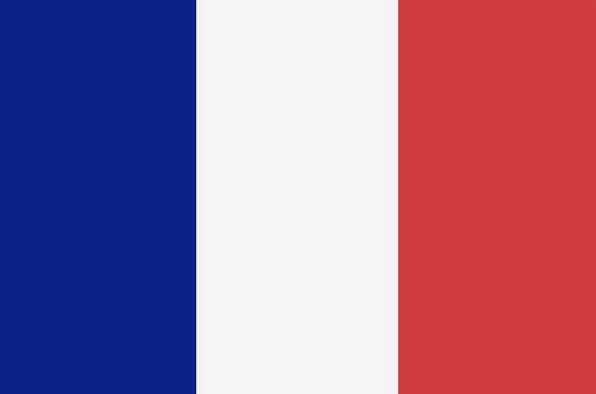

English Class
more informationSpanish Class
more informationGerman Class
more informationFrench Class
 more informationTurkish Class
more informationclasses :
English
Our English program is a 12-week intensive course that reviews the structure of the test, all four skill areas (reading, listening, speaking, and writing), and useful techniques to help you achieve your desired score. We work on one skill area each day Mondays-Thursdays and finish the week with a practice exam that includes all four skill areas on Fridays.
Spanish
General Spanish courses are for adults who want to improve their speaking, listening, reading, and writing skills in Spanish. Most general Spanish courses are for adults age 16 and up. 2 - 48 week courses available. Most courses average 30 classes per week.
German
Our long experience in teaching students with different German levels will give you the best opportunity to practise and improve your speaking, listening, reading and writing skills, and your knowledge of grammar and vocabulary.
French
The leading French language school for kids and teens aged 6 to 17 years old who come to study French in France!French lessons in the South of France. Suitable for all levels and tailored to individual needs.French teachers! Planning on coming to France to learn French with your class? Contact us for a bespoke program!
Turkish
Standard Turkish Course Learn Turkish five days a week for 3 lessons and have the rest of the day off! No class will be bigger than 5 students and we will provide all language levels, from beginners to advanced. To be able to offer you a Turkish course of your level and ability we will ask you to pass a small placement test in advance.